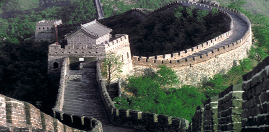
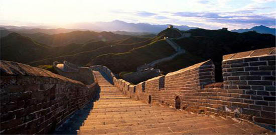
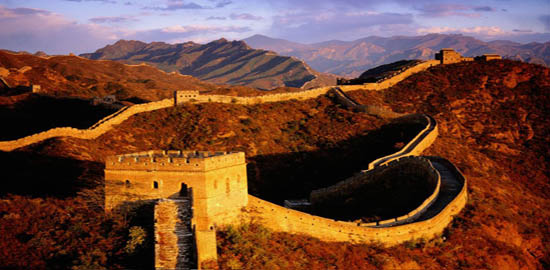
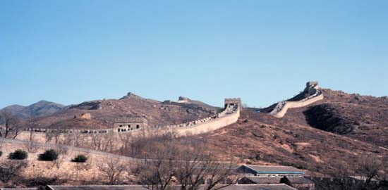
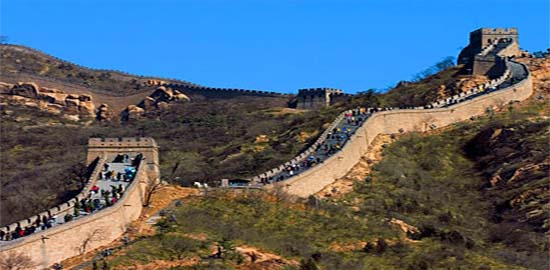
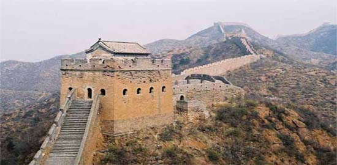
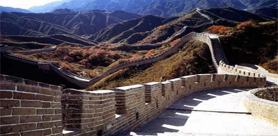

|
|







Великата китайска стена е отбранително съоръжение в Северен Китай, издигнато през 3 век пр.н.е. (в по-голямата си част) върху основата на хунски окопен вал за защита на северозападните граници на империята, нееднократно достроявана. Тя прекосява страната от границата с Корея, при заставата Шанхайгуан до пустинята Гоби, при заставата Дзяюгуан и се оприличава често на дълъг дракон. Тя е едно от най-древните и добре запазени творения на човешкия дух, символ на китайската нация. Името и на китайски звучи "Чанчън" и буквално означава "Дълга защитна стена".
Стената започва да се строи още през 7 век пр.н.е. в епохата на Пролети и есени и на Воюващите царства. През следващите 2300 години повече от 20 династии и царства работят по укрепването и удължаването и, като така се създава най-голямото съоръжение с военна цел в света, най-голям принос имат династиите Цин, Хан и Мин, които построяват повече от 5000 км. Началото се поставя от владетелят на царство Чу - Чън през 7-ми в.пр.н.е., като контрамярка срещу нападенията на царство Чи, който започва да строи от камъни и пръст голяма квадратна стена. На места тя е заменена от водни канали или естествени планински прегради и по нейната дължина са построени малки крепости. Тази стена се приема за първообраза на този тип строителство. Скоро и другите царства започват да следват примера му и да строят стени да се отбраняват едно от друго, както и от варварските племена от Север. Най-късата от тези стени е 50 км, а най-дългата над 500 км. Останките от тези първи стени показват териториите на отделните царства. Голяма част от стената (около 1000 км.) е построена по време на царство Цин, за да се защити от атаките на номадските племена.
Основният материал за изграждането на стената е пръст, камъни, дърво и керемиди. За нуждите на строителството в планините направо се отварят каменни кариери, откъдето се взимат цели блокове. На Льосовото плато се използва главно пръст, а в пустинята – тръни и пясък. Тухлите и дървото се използват за по-важните участъци. Структурата на стената е замислена много добре, тя следва особеностите на терена и минава през стратегическите точки за да може да се осигури ефикасна отбрана и победа срещу нападателите. Основната и част са високи стени, издигнати върху планински била. По нея има хиляди застави, наблюдателници, площадки за даване на знаци с огън и дим. Тя има зъбци на всеки 2 м., което улеснява стрелбата по нападателите. На равно разстояние се издигат наблюдателниците и площадките. Те от своя страна играят голяма роля в опазването на столицата. При приближаваща опасност, войниците започват да си препредават знаци с дим, които могат за много бързо време да достигнат до столицата и да започнат да се изпраща помощ. Покрай стената са построени фортове, където живеят войниците и се съхраняват провизии.Горната част на стената е облицована с 3-4 слоя тухли, които са така добре слепени с вар, че е невъзможно в тях да поникне трева. Върху стената, широка 4,5 м, могат да преминат едновременно 5 коня или 10 души. Отгоре е направена и канализация, за да може да се оттича дъждовната вода чрез капчуци в земята.
Сега общата дължина на всички участъци е към 6000-6700 км, като стената на места може да достигне на ширина до 10 м., а на височина 15 м., като в по-отдалечените части на страната тя представлява просто по-големи земни валове. Изчислено е, че общо са използвани приблизително около 180 млн. м3 пръст и 60 млн. м3 други строителни материали. Ако този материал се използва за построяването на стена с дебелина 1 м. и височина 5 м., то тя ще обиколи цялата Земя един път и нещо. Снимките от сателит показват, че сега участъци с обща дължина около 1000 км са разрушени изцяло или са погребани под земята.
|